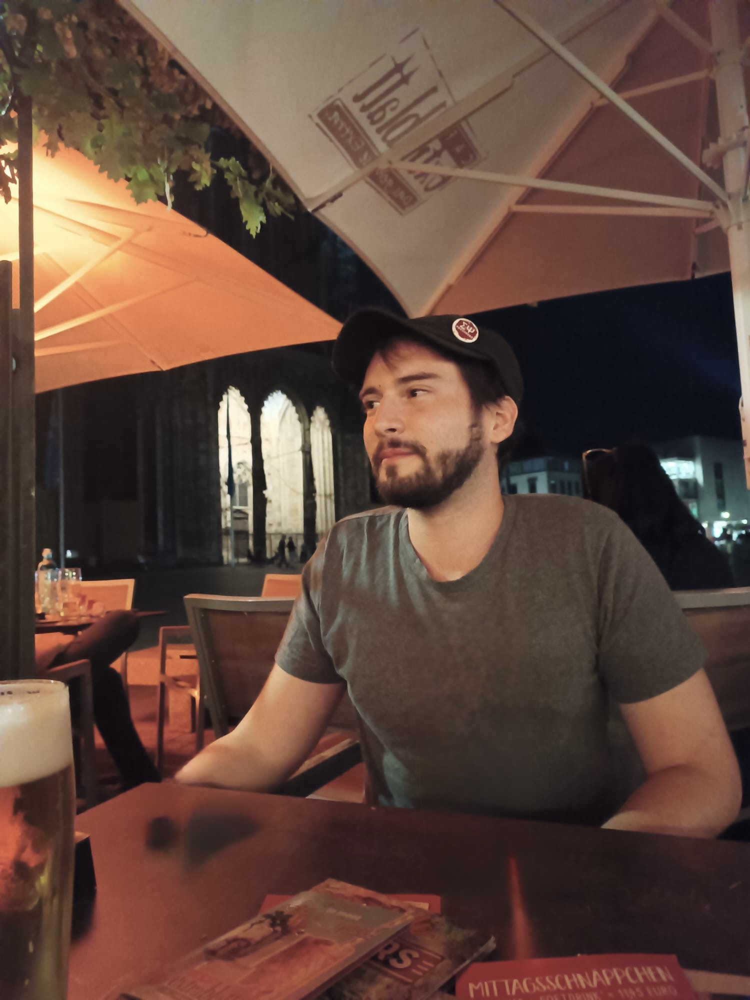

Lorenzo Esposito
I am a PhD student at the Department of Educational Sciences (DISFOR), University of Genoa. My research investigates how children learn mathematics, focusing on the cognitive and emotional factors that influence educational outcomes, such as individual differences, math anxiety, intelligence, and gender.
To explore these patterns in cognitive development, I conduct field experiments directly in schools and analyze large-scale educational assessments. In this context, I actively collaborate with the psychology departments at the University of Padua and occasionally take part in teaching activities.
Beyond my primary research, I have a strong focus on methodology and applied statistics in psychology. I leverage these quantitative tools to design robust experimental frameworks and analyze complex learning processes within educational settings.